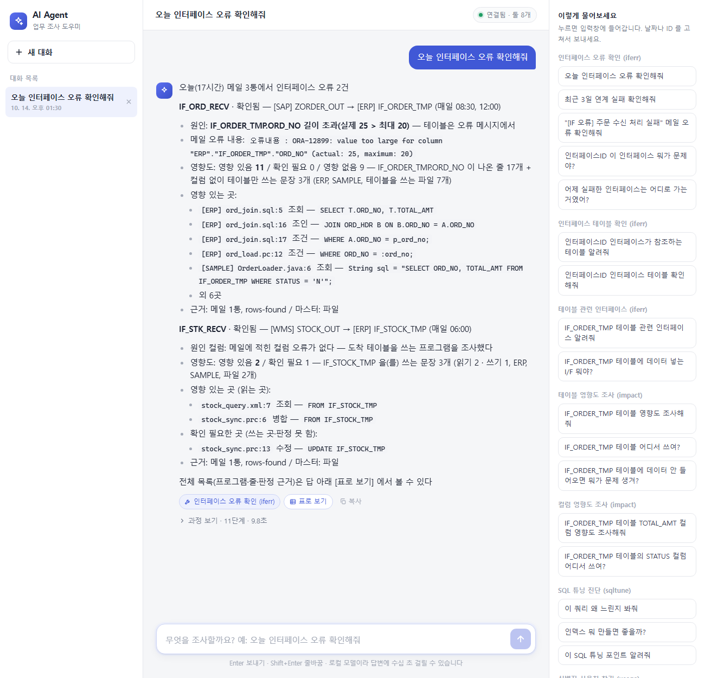
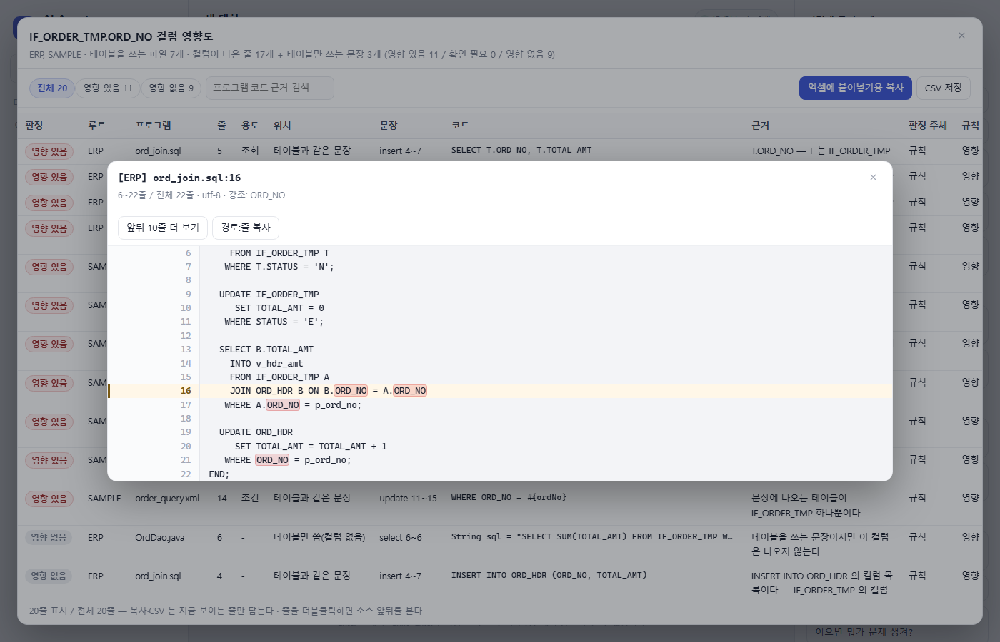

사내 업무 조사 도우미
로컬 LLM · MCP · LangGraph 로 만든 AI Agent
[발표자] · [팀명] · 2026. 10
해결하려고 한 것
오류 메일에서 인터페이스 ID 를 찾고, DIMS 에서 타겟 테이블을 다시 확인한 뒤, 소스에서 테이블과 컬럼을 차례로 검색해 영향을 판단했습니다.
해결하려고 한 것
기존 — 사람이 직접
지금 — AI Agent 에게 한마디
“오늘 인터페이스 오류 확인해줘”
해결하려고 한 것
작은 로컬 모델은 툴을 이어 부르지 못합니다. 단계를 잇는 일은 모델이 아니라 에이전트가 합니다.
ORA 메시지, 별칭, 호스트 변수처럼 정해지는 것은 규칙으로 확정하고 애매한 줄만 LLM 이 봅니다.
판정할 수 없거나 규칙과 LLM 이 갈리면 ‘확인 필요’로 남깁니다. 행마다 근거를 함께 보여 줍니다.
로컬 LLM 으로 외부 전송이 없습니다. 메일과 DB 는 읽기만 하고, 발송·수정은 자동으로 하지 않습니다.
구성도 · 사용 기술
Flask · 바닐라 JS — 폐쇄망이라 CDN 없이
진행 표시 · 표로 보기 · 엑셀 복사 · 소스 보기
Ollama · qwen3.5:4b
LangChain create_agent
MCP SDK · stdio
툴 + 리소스(전체 데이터)
incident · 단계 잇기
iferr · 메일·인터페이스
impact · 테이블 영향도
column · 컬럼 영향도
usage · 사용처·소스
sqltune · SQL 튜닝
단계마다 따로 부를 수 있고, 통합 툴은 같은 함수를 이어 씁니다.
core · sqlstmt · text
별칭·호스트 변수·주석
Outlook · Oracle
소스 루트 여러 개
읽기 전용 · 바인드 변수
루트 밖 파일 차단
pytest 시험 371개
툴 선택 38/38
구성도 · 흐름
01
채팅창에 한마디
02
LLM 이 통합 툴 하나를 고름
03
오류 메일과 인터페이스 ID
04
마스터에서 출발·도착 테이블
05
메일 오류 내용에서 문제까지
06
소스 줄마다 규칙 → LLM
결과가 곧 답 — 모델이 다시 쓰지 않고 그대로 보여 줍니다. 전체 목록은 표로, 의심 줄은 소스로.
LLM — 툴 고르기 · 메일 판정 · 애매한 줄 판정
규칙·코드 — 나머지 전부, 근거와 함께
시연
REM Ollama 주소가 다르면
set OLLAMA_HOST=http://[주소]:11434
samples\demo\run_demo.bat
→ 오늘 날짜 데모 메일 3통 생성
→ 챗봇 실행 (config_local 그대로)
| 항목 | 내용 |
|---|---|
| 데모 메일 | 3통 — 길이 초과 · 응답 없음 · 정상 보고 |
| 인터페이스 마스터 | 가짜 JSON 파일 (DB 없이) |
| 소스 루트 | ERP · SAMPLE 두 곳의 샘플 소스 |
| 모델 | Ollama qwen3.5:4b |
| 응답 시간 | 데모 실측 1~4초 |
시연 시나리오
01
“오늘 인터페이스 오류 확인해줘”
오류 2건 — 주문은 원인 컬럼(길이 초과 25 > 20), 재고는 도착 테이블로 영향도까지
02
답 아래 [표로 보기]
판정별 거르기, 줄마다 근거, 엑셀에 붙여넣기용 복사
03
표의 줄 더블클릭
앞뒤 10줄과 줄 번호, 그 줄과 컬럼 이름을 강조
04
“[연계오류] 주문 수신” 메일 오류 확인해줘
그 메일 한 통만 조사하고, 어느 메일을 봤는지부터 밝힘
시연 01 · 한마디

시연 02 · 03 · 표와 소스

실시연
samples\demo\run_demo.bat 실행 후 위 주소를 엽니다